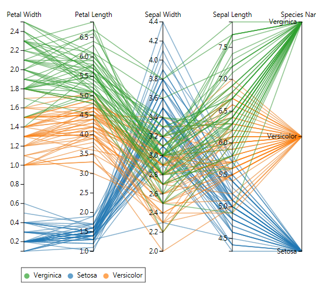
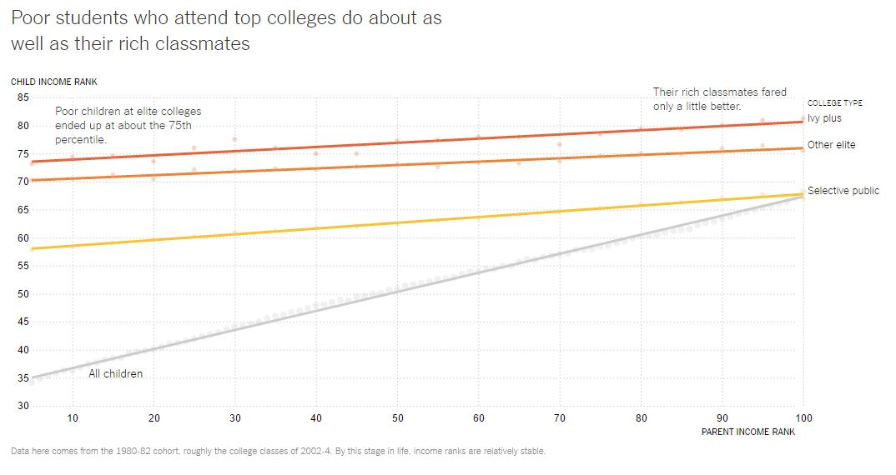
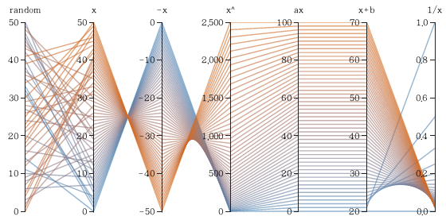
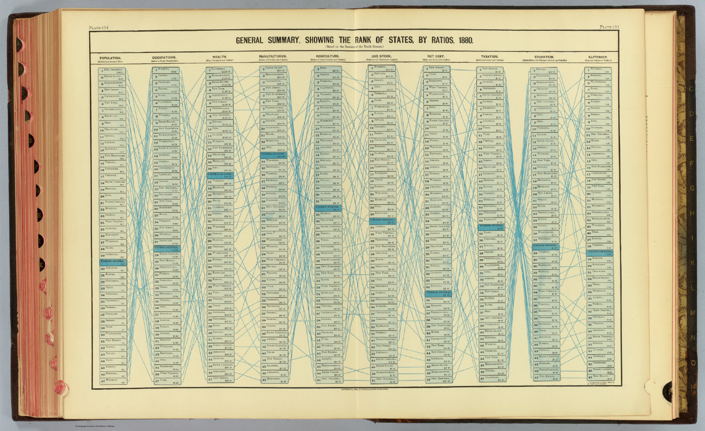

Parallel Coordinates is a method of displaying multivariate data, useful especially when the data do not have an inherent order and can be rearranged to find patterns. This form is most appropriate for sets of data which have x- and y-values for every category to be displayed.
Parallel coordinate displays can be thought of as a series of superimposed line graphs that each track one element across multiple variables. Parallel coordinates feature an x-axis and a y-axis; n parallel lines (typically vertical) each represent one category with a corresponding value along the y-axis.
Parallel coordinate charts allow one to visualize and analyze data points that share a set of variables. Trends and relationships among groups or around a certain category can become clearer when visualized with parallel coordinates. For example, in this flower petal visualization shown below:
the verginica and versicolor species display a similar relationship between the four measurements; since the actual measurements are different, this similarity might not be as evident in list or spreadsheet form, but becomes immediately clear in a parallel coordinates system. The order of the x-axis categories is irrelevant. It doesn't matter whether petal width or petal length appears first, and that freedom allows the user to play around with the order and see if a pattern emerges.
The following graphic from The New York Times, for example, approximates parallel coordinates by tracking three variables: parent income rank, child income rank later in life, and the type of college attended.
The parent income rank (along the x-axis) at each decile is independent of the other deciles. By connecting the points which correspond to college selectivity categories, the reader gains an extra layer of analysis and can interpret the data more easily. It becomes clear that while most children grow into the income categories in which they were raised, children who go to selective schools largely end up earning similarly high incomes.
Several different programs can be used to build parallel coordinates visualizations, including ELKI, GGobi, Mondrai, ROOT, and Orange.
A number of patterns can be observed using parallel coordinates, as demonstrated in the following visualization. In the first section, for example, there is no observable relationship among the data. The second section features a negative relationship, as the lines cross at the midpoint. The third section features a positive, exponential relationship, and so on. When dealing with actual data, rearranging the x-axis points can bring different relationships such as the ones shown here into focus.
Examples of parallel coordinate visualizations appear as early as 1880 (Chart for the U.S. Census, General Summary, Showing the Rank of the States, by Ratios, attributed to Henry Gannett and Fletcher Hewes, shown below). Alfred Inselberg is also credited with inventing the form as early as 1959; at the very least, he helped develop and popularize parallel coordinate charts through textbooks (Parallel Coordinates: Visual Multidimensional Geometry and Its Applications in 2009), articles (The Plane with Parallel Coordinates, in The VIsual Computer, 1985), and work on topics like air traffic control and data mining. Parallel coordinates are related to time-series visualizations, which have an inherent order (that is, there is a logical and presumptive order to the data points when time runs along the x-axis. Reordering the axes in a time series is likelier to cause confusion than to offer a chance to observe meaningful patterns, as it does with parallel coordinates).
Sources: